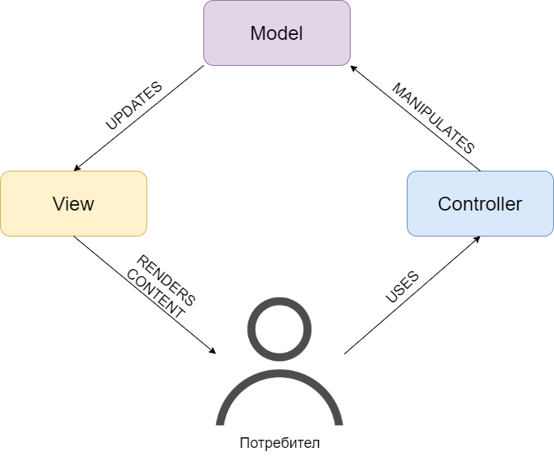
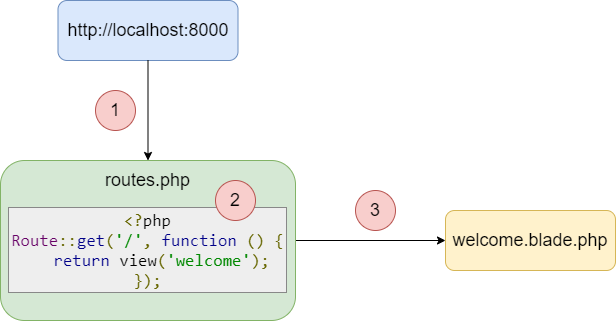

Въведение
Laravel e един от най-популярните PHP уеб фреймуърци. С безплатен и отворен код е и е създаден от Тейлър Отуел през 2011. Основната идея зад него е да служи за бърза и лесна разработка на уеб приложения. Laravel следва архитектурния шаблон Model-View-Controller (MVC). Базиран е върху друг php фреймуърк - Symfony. Изходният код на Laravel се съхранява в GitHub и е лисензиран под условията на MIT лиценз. [2]
Някои от по-използваните и интересни вградени функционалности на фреймуърка са [3]:
- Модулна система за управление на пакети със собствен инструмент за управление на зависимостите (dependency manager Composer). Това значи, че могат лесно да се добавят функционалности към Laravel приложението без да трябва да се започват от нулата. Всеки разработчик може да създаде свои пакети за код, който се използват редовно, или да инсталира готовите за ползване пакети през Composer.
- Цялостна система за автентикация.
- Object-relational mapping (ORM) система - Eloquent ORM заедно с Laravel представят таблици от базата данни като класове с цел по-лесен достъп и манипулация на данните.
- Интерфейс с команден ред - Artisan CLI, който идва с много вградени команди.
- Автоматично тестване - автоматизирани тестове се предоставят като неразделна част от Laravel.
- Преносима, виртуална среда за разработване. Homestead предоставя на програмистите всички инструменти, необходими за разработка чрез Laravel, директно готови за използване.
За тези и други интересни вградени функционалности, можете да прочетете подробности по-долу.
Какво са софтуерен и уеб фреймуърк?
Софтуерен фреймуърк според Уикипедия [5] е абстракция, в която софтуер, който предоставя общи функционалности, може да се промени избирателно чрез добавяне на допълнително написан код, като по този начин предоставя софтуер за специфични нужди. Освен това ни дава и стандартизиран начин, по който да изграждаме и внедряваме приложения. По-просто казано, софтуерен фреймуърк е структура, която можеш да използваш, за да изградиш нещо по-бързо и по-лесно. Позволява ти да ползваш различни компоненти, да комуникираш с външни приложно-програмни интерфейси (APIs) и да дефинираш структурата на твоето приложение.
Софтуерният фреймуърк ти позволява [4]:
- да намалиш сложността - той прави по-лесно справянето със сложни ситуации, разбивайки ги на различни малки парченца;
- да пишеш чист код - той ти помага да пишеш чист и използваем код;
- да тестваш и дебъгваш - той прави тестването и дебъгването лесни и забавни;
- да следваш ръководства за разработка - той кара теб и екипа ти да следвате стриктни правила и ръководства, които насърчават консистентността в базата код и спомагат за намаляване на бъговете;
- да скалираш - той ти помага да скалираш лесно при нужда, без значение колко бързо приложението ти расте.
Уеб фреймуъркът е просто друг вид софтуерен фреймуърк, който ти помага да изграждаш уеб апликации, включително уеб услуги и приложно-програмни интерфейси. Един уеб фреймуърк ти позволява да създаваш компоненти, които могат да се преизползват и да изпълняваш ежедневните си задачи по-лесно.
Архитектурен шаблон Model-View-Controller (MVC)
Фигура 1. Диаграма на архитектурния шаблон Model-View-Controller
Както името на този шаблон сочи, приложението се разделя на три основни компонента - модел (model), изглед (view) и контролер (controller).
- Модел - представя оформянето на данните и бизнес логиката, т.е. репрезентира знанието. Поддържа данните на приложението. Обектите-модели извличат и съхраняват състоянието на модела в базата данни.
- Изглед - това е потребителският интерфейс, т.е. визуалната репрезентация на данните. Той показва данните на потребителя, използвайки модела, и също му позволява да модифицира данните.
- Kонтролер - приема заявките от потребителя, т.е. това е връзката между системата и потребителя. Обикновено потребителят взаимодейства с изгледа, който като отговор изпраща подходяща URL заявка. Тази заявка се поема от контролера- той изрисува подходящия изглед заедно с данните от модела като отговор на действието на потребителя. [6], [7]
За моделите можете да прочете повече в секцията за Eloquent, за изгледите - в тази за Templatе Engine, a за контролерите - в темите Маршрутизация и Контролери.
Управление на зависимостите
Зависимостите са пакети или основно модули/плъгини от трети страни, които са нужни, за да може проекта ти да се изпълни. Например, PHPUnit е лесен за интеграция, независим фреймуърк за тестване и затова, ако приложението ти се нуждае от компонентно тестване (unit testing), следователно се нуждаеш от PHPUnit и той автоматично се превръща в зависимост. Управлението на зависимостите решава тези проблеми чрез автоматизация и стандартизация.
Ръчното управление на зависимостите на който и да е програмен език е тежка работа. Затова можем да забележим, че днес всички езици за програмиране имат имплементация на система за управление на зависимостите(dependancy manager) или общо казано пакетен мениджър.
При PHP, се ползва NPM (Node Package Manager) за фронтенд технологии като JavaScript, VueJS. За бекенда де факто Composer е инструмента за управление на зависимостите. [8]
След инсталиране на Composer всичко, което ти е нужно, за да започнеш да го използваш в проекта си, е composer.json файл. Този файл описва зависимостите на проекта и може да съдържа други метаданни.
{
"require": {
"monolog/monolog": "1.0.*"
}
}
Код 1. Пример за composer.json файл. [1]
Първото (и много често единственото) нещо, което специфицираме в composer.json е ключът require. Чрез него показваме на Composer от кои пакети точно зависи проекта ни. Ключът приема за стойност обект, който съпоставя имена на пакети (в случая monolog/monolog) и ограничения на версията (в случая 1.0.*). [9]
Artisan CLI
Artisan е интерфейсът с команден ред зад Laravel. Предоставя много полезни команди, които могат да ви асистират, докато изграждате приложението си. По този начин можете да избегнете ръчното изпълнение на повечето повтарящи се задачи. За да видите списък с всички налични Artisan команди, можете да използвате командата list:
php artisan list
Код 2. Пример за използване на Artisan list командата в командния ред. [1]
В допълнение на командите предоставени от Artisan, можете също така да създавате свои собствени команди. Командите обикновено се съхраняват в директорията app/Console/Commands, но сте свободни да изберете своя локация за съхранение, стига командите да могат да се заредят от Composer.
За да генерирате нови команди, използвайте make:command командата на Artisan. Тази команда ще създаде нов команден клас в директорията app/Console/Commands. Генерираната команда ще включи множество от член-данни и член-функции по подразбиране, които са налични за всички команди.
php artisan make:command SendEmails
Код 3. Пример за използване на Artisan make:command командата в командния ред. [1]
Създавайки вашата команда, трябва да попълните полетата signature и description на класа, които ще се ползват при показването на командата на екрана чрез list. Методът handle ще се извика, когато командата бъде изпълнена. Можете да добавите логиката на командата в този метод.
Нека погледнем примерна команда. Забележете, че можем да добавим всякакви зависимости, от които имаме нужда, към handle метода на командата.
<?php
namespace App\Console\Commands;
use App\DripEmailer;
use App\User;
use Illuminate\Console\Command;
class SendEmails extends Command
{
/**
* The name and signature of the console command.
*
* @var string
*/
protected $signature = 'email:send {user}';
/**
* The console command description.
*
* @var string
*/
protected $description = 'Send drip e-mails to a user';
/**
* Create a new command instance.
*
* @return void
*/
public function __construct()
{
parent::__construct();
}
/**
* Execute the console command.
*
* @param \App\DripEmailer $drip
* @return mixed
*/
public function handle(DripEmailer $drip)
{
$drip->send(User::find($this->argument('user')));
}
}
Код 4. Пример за php логика на новогенерирана Artisan команда. [1]
Автентикация
Автентикацията е основна част от всяко модерно уеб приложение. Пишейки автентикационна система сам от нулата, както в други фреймуърци, може да отнеме много от времето за разработка. Laravel предоставя автентикация наготово - само чрез изпълнение на проста команда можете да създадете напълно функционираща и конфигурирана автентикационна система. Освен това Laravel предоставя добра документация, чрез която можете да имплементираме собствена автентикация.
Автентикационният конфигурационен файл се намира в config/auth.php и съдържа някои добре документирани опции за настройване на поведението на автентикационната услуга. В същността си автентикацията на Laravel се състои от “пазачи”(guards) и “доставчици”(providers).
Пазачите дефинират как потребителите се автентикират за всяка заявка. Например в Laravel съществува session пазач, който поддържа състоянието, използвайки хранилището за текущата сесия и бисквитки (HTTP cookies).
Доставчиците дефинират как потребителите се извличат от постоянното си хранилище. Laravel поддържа извличане чрез Eloquent и инструмента за създаване на заявки към базата данни. Освен това, имаш свободата да дефинираш допълнителни доставчици, ако това е нужно за приложението ти. [1], [4]
Eloquent ORM
Laravel е базиран на Eloquent ORM, който предоставя поддръжка за почти всички системи за бази от данни. Работи перфектно с MySQL и SQLite. Laravel има подробна документация за всички Eloquent функции.
Всяка таблица от базата данни има кореспондиращ клас на модел, който се използва за взаимодействие с тази таблица. Моделите ви позволяват да правите заявки за данни, както и да добавяте нови записи в базата.
Моделите обикновено живеят в директорията app, но се чувствайте свободни да ги сложите навсякъде, където те да могат автоматично да се заредят спрямо composer.json файла. Всички Eloquent модели наследяват класа Illuminate\Database\Eloquent\Model.
Най-лесният начин да създадете инстанция на модел е да ползвате Artisan командата make:model:
php artisan make:model Flight
Код 5. Пример за използване на Artisan make:model командата в командния ред. [1]
Ето как изглежда примерният модел Flight, който ще използваме, за да можем да извличаме и запазваме информация от нашата таблица в базата данни flights:
<?php
namespace App;
use Illuminate\Database\Eloquent\Model;
class Flight extends Model
{
//
}
Код 6. Пример за новогенериран модел. [1]
Примерна работа с модел:
- извличане на данни от базата данни
<?php $flights = App\Flight::all(); foreach ($flights as $flight) { echo $flight->name; }Код 7. Примерен php код за извличане на данни. [1]
- добавяне на допълнителни ограничения при извличане на данни
$flights = App\Flight::where('active', 1) ->orderBy('name', 'desc') ->take(10) ->get();Код 8. Примерен php код за добавяне на допълнителни ограничения. [1]
- добавяне на модели
$flight = new Flight; $flight->name = 'New Flight Name'; $flight->save();Код 9. Примерен php код за добавяне на данни. [1]
- обновяване на модели
$flight = App\Flight::find(1); $flight->name = 'New Flight Name'; $flight->save();Код 10. Примерен php код за обновяване на данни. [1]
- изтриване на модели
$flight = App\Flight::find(1); $flight->delete();Код 11. Примерен php код за изтриване на данни. [1]
Кеширане
Кеширането е техника за съхранение на данни във временно място, от където те бързо могат да се извлекат при нужда. Кеширането се използва, за да повиши производителността на приложението. Laravel кешира почти всякакви данни от изгледи (views) до маршрути (routes), с което понижава времето за обработка на данните. [4]
Кеш конфигурацията се намира в config/cache.php, където може да се специфицира кой кеш драйвър ще се използва по разбиране от приложението ви. По начало е зададен file кеш драйвъра, който съхранява сериализирани, кеширани обекти във файловата система. За по-големи апликации обаче се препоръчва използването на по-стабилни драйвъри като Memcached или Redis. Могат дори да се конфигурират няколко кеш конфигурации за един и същ драйвър.
- извличане на елемент от кеша
Използва се методът get от фасадния клас Cache. Ако артикулът не е присъства в кеша, null ще се върне като резултат. Може да се подаде втори незадължителен аргумент на метода, който специфира стойността по подразбиране, която да се върне, ако артикулът не съществува:
$value = Cache::get('key'); $value = Cache::get('key', 'default');Код 12. Примерен php код за извличане на елемент от кеша. [1]
- инкрементиране/декрементиране на стойности
Методите increment и decrement могат да се ползват за промяна на стойностите на цели числа в кеша. И двата метода приемат опционален втори аргумент, който показва количеството, с което да се инкрементира или декрементира стойността на артикула:
Cache::increment('key'); Cache::decrement('key', $amount);Код 13. Примерен php код за инкрементиране/декрементиране на стойности в кеша. [1]
- записване на елементи в кеша
Може да се ползва методът put от фасадния клас Cache, за да се запишат елементи в кеша:
Cache::put('key', 'value', $seconds);Код 14. Примерен php код за записване на елемент в кеша. [1]
Ако времето за съхранение (третият аргумент) не се посочи, артикулът ще се запази за недефиниран период от време. Също така освен подаване на цяло число за броя секунди, може да се подаде и инстанция на класа DateTime, която представлява моментът, в който кешираният елемент ще загуби валидността си.
Cache::put('key', 'value', now()->addMinutes(10));Код 15. Примерен php код за записване на елемент в кеша за 10 минути след текущия момент. [1]
- записванe на елементи завинаги
Методът forever може да се ползва за съхранение на елемент в кеша за постоянно. Тъй като тези артикули никога не губят валидност, те могат да бъдат премахнати от кеша ръчно чрез метода forget:
Cache::forever('key', 'value');Код 16. Примерен php код за записване на елемент в кеша завинаги. [1]
- изтриване на елементи от кеша
Методът forget споменат по-горе:
Cache::forget('key');Код 17. Примерен php код за изтриване на елемент от кеша. [1]
Могат също да се премахват елементи чрез задаване на нулево или отрицателно време за съхранение:
Cache::put('key', 'value', -5);Код 18. Друг начин за изтриване на елемент от кеша. [1]
Целият кеш може да се зачисти чрез метода flush:
Cache::flush();Код 19. Примерен php код за зачистване на целия кеш. [1]
Template engine
Blade е системата за шаблони (templating engine) в Laravel. Тя предоставя огромно количество от помощни функции, с които да форматираме данните си през изгледите (views). Blade също имплементира шаблонното наследяване, което може да се използва за създаването на сложни оформления. Всички шаблони на Blade ползват разширението .blade.php. [4]
Blade е уникална в сравнение с други подобни системи, защото:
- Не ограничава разработчика от това да използва обикновен PHP код в изгледите.
- Изгледите на Blade след техния дизайн се компилират и се кешират, докато не се променят.
Всички изгледи се съхраняват в директорията resources/views, a изгледът по подразбиране за Laravel е welcome.blade.php. [11]
Повече за изгледите и Blade можете да прочетете в следващата секция за Маршрутизация.
Маршрутизация
В Laravel всички заявки се разпределят с помощта на маршрути (routes). В същността си маршрутизирането се ползва за изпращане на заявката от потребителя до свързания с нея контролер.
Всички маршрути на приложението се регистрират във файла app/routes.php. Този файл казва на Laravel кои са унифицираните идентификатори на ресурси (URI), на които трябва да отговори, а свързаният контролер ще направи специфичното извикване.
Примерен маршрут за начална страница може да видите по-долу:
Route::get ('/', function () {
return view('welcome');});
Код 20. Примерен php код за маршрутизация на страница. [10]
<!DOCTYPE html>
<html>
<head>
<title>Laravel</title>
<link href = "https://fonts.googleapis.com/css?family=Lato:100" rel = "stylesheet"
type = "text/css">
<style>
html, body {
height: 100%;
}
body {
margin: 0;
padding: 0;
width: 100%;
display: table;
font-weight: 100;
font-family: 'Lato';
}
.container {
text-align: center;
display: table-cell;
vertical-align: middle;
}
.content {
text-align: center;
display: inline-block;
}
.title {
font-size: 96px;
}
</style>
</head>
<body>
<div class = "container">
<div class = "content">
<div class = "title">Laravel 5</div>
</div>
</div>
</body>
</html>
Код 21. Примерен html код на страница (изглед). [10]
Механизмът на маршрутизация е показан по-долу:
Фигура 2. Примерна схема на принципа за маршрутизиране.
- Стъпка 1
Първоначално трябва да изпълним началния универсален указател на ресурс (root URL) на приложението.
- Стъпка 2
Сега въведеният URL трябва да отговаря на аргументите на подходящ метод в route.php файла. В текущия случай аргументът трябва да отговаря на началния (‘/’) URL. Това ще изпълни свързаната с него функция, т.е. втория аргумент на търсения метод.
- Стъпка 3
Функцията извиква шаблонния файл resources/views/welcome.blade.php. Това става посредством викането на функцията view() с аргумент 'welcome', т.е. без да се уточнява формата на файла (blade.php). Това ще произведе изходен HTML, както е показано на изображението по-долу:
Фигура 3. Резултат в браузъра след осъществяване на маршрутизацията.
Параметри на маршрута
Понякога в уеб апликацията имаш нужда да прихванеш параметрите подадени през URL. За тази цел, трябва да модифицирате кода в routes.php файла.
- Задължителни параметри
Тези параметри са онези, които трябва задължително да бъдат прихванати при маршрутизирането на уеб приложението. Например е важно да захванете потребителския идентификационен номер от URL. Това би било възможно чрез дефинирането на параметри на маршрута както е показано по-долу:
Route::get('ID/{id}',function($id) { echo 'ID: '.$id; });Код 22. Примерен php код с дефиниция на задължителни параметри в маршрута. [10]
- Опционални параметри
Понякога програмистите могат да създадат опционални параметри и е възможно чрез включването на ? след името на параметъра в URL. Важно е да се пази името по подразбиране споменато като име на параметър. Вижте следния пример, който показва как се дефинира опционален параметър:
Route::get('user/{name?}', function ($name = 'TutorialsPoint') { return $name;});Код 23. Примерен php код с дефиниция на опционални параметри в маршрута. [10]
Примерът проверява дали стойността отговаря на 'TutorialsPoint' и спрямо това маршрутизира до дефинирания URL.
Именовани маршрути
Именованите маршрути позволяват удобен начин за създаване на маршрути. Навързването на маршрути може да бъде специфицирано, използвайки метода name() в дефиницията на маршрута. Следният код показва пример за създаване на наименовани маршрути с контролер:
Route::get('user/profile', 'UserController@showProfile')->name('profile');
Код 24. Примерен php код с именован маршрут. [10]
Контролерът на потребителя ще извика член-функцията си showProfile(), като за параметър ще ползва 'profile'.
Контролери
Вместо да се дефинира цялата логика за справяне със заявки в единичен routes.php файл, може да искате организирате това поведение чрез контролер класове. Контролерите могат да групират логиката по взаимосвързани HTTP заявки в един клас. Контролерите типично се съхраняват в директорията app/Http/Controllers. Ето пример за основен клас на контролер, като всички Laravel контролери трябва да наследяват базовия клас на контролер.
<?php
namespace App\Http\Controllers;
use App\User;
use App\Http\Controllers\Controller;
class UserController extends Controller
{
/**
* Show the profile for the given user.
*
* @param int $id
* @return Response
*/
public function showProfile($id)
{
return view('user.profile', ['user' => User::findOrFail($id)]);
}
}
Код 25. Примерен клас на контролер. [1]
Можем да навигираме до действието в контролера по следния начин:
Route::get('user/{id}', 'UserController@showProfile');
Код 26. Примерно викане на метода на контролер класа в routes.php файла. [1]
Сега, когато заявката съответства на специфицирания URI, методът showProfile от класа UserController ще се изпълни. Разбира се, параметрите на маршрута също ще се подадат на метода.
Автоматично тестване
Laravel е написан, като се е обърнало голямо внимание на тестването. Всъщност, поддръжката за тестване с PHPUnit е вградена и phpunit.xml файлът е настроен за вашето приложение. Фреймуъркът също предоставя удобни помощни методи, които ви позволяват да тествате подробно апликациите си.
По подразбиране, директорията на приложението ви tests съдържа 2 поддиректории в себе си: Feature и Unit. Компонентните тестове (Unit tests) са тестове, които се фокусират върху много малка, изолирана част от кода ти. Всъщност, повечето unit тестове най-вероятно се съсредоточават върху един-единствен метод. Feature тестовете могат да тестват по-голяма порция код, включително как няколко обекта се държат помежду си или дори как цяла HTTP заявка стига до крайната си точка (endpoint) в JSON формат. Файлът ExampleTest.php присъства и в двете тестови директории Feature и Unit. След инсталиране на ново Laravel приложение, изпълнете phpunit в командния ред, за да изпълните тестовете.
За да създадете нов тестови случай (test case) използвайте Artisan командата make:test:
// Create a test in the Feature directory...
php artisan make:test UserTest
// Create a test in the Unit directory...
php artisan make:test UserTest --unit
Код 27. Примери за използване на Artisan make:test командата в командния ред. [1]
Веднъж щом тестът е бил генериран, вие можете да дефинирате тестови методи, както бихте ползвали по принцип PHPUnit. За да изпълните тестовете, изпълнете командата phpunit или artisan test в терминала си.
<?php
namespace Tests\Unit;
use PHPUnit\Framework\TestCase;
class ExampleTest extends TestCase
{
/**
* A basic test example.
*
* @return void
*/
public function testBasicTest()
{
$this->assertTrue(true);
}
}
Код 28. Примерен php код на генериран тестови файл. [1]
Homestead
Laravel се стреми да направи цялостната PHP разработка едно приятно усещане включително и локалната среда за разработка. Vagrant ни предоставя прост, елегантен начин да управляваме и осигуряваме виртуални машини.
Laravel Homestead е официална, препакетирана Vagrant кутия (box), която ти предоставя чудесна среда за разработка без да изисква инсталация на PHP, уеб сървър или какъвто и да е друг сървърен софтуер на локалната ти машина. Без повече притеснения, че в операционната ти система ще настъпи безпорядък. Vagrant кутиите са изцяло безплатни - ако нещо се обърка, можеш да унищожиш и създадеш наново кутията за броени минути. Homestead се изпълнява на всяка Windows, Mac, или Linux система и включва Nginx, PHP, MySQL, PostgreSQL, Redis, Memcached, Node.
Обобщение
Laravel се е доказал като един от най-добрите PHP фреймуърци заради по-горе изброените, както и много други функционалности и непрекъснатото си подобрение и усъвършенстване. Laravel помага в създаването на стабилни приложения, използвайки прост, но експресивен подход - затова Laravel е най-използваният PHP фреймуърк.
Източници
[1] Paul Tero, "Introduction To URL Rewriting" [ https://www.smashingmagazine.com/2011/11/introduction-to-url-rewriting/ ], последно посетено на 09.04.2020.
[2] Laravel Wikipedia page (in English) [https://en.wikipedia.org/wiki/Laravel], последно посетено на 09.04.2020.
[3] 'What is Laravel? Explain it like I`m five.', публикуван 09.12.2019 [https://updivision.com/blog/post/what-is-laravel-explain-it-like-i-m-five], последно посетено на 09.04.2020.
[4] 'What is Laravel and Why You Should Learn it?', публикуван 05.10.2018 [https://www.larashout.com/what-is-laravel-and-why-you-should-learn-it], последно посетено на 09.04.2020.
[5] Software framework Wikipedia page (in English) [https://en.wikipedia.org/wiki/Software_framework], последно посетено на 09.04.2020.
[6] 'MVC Architecture' [https://www.tutorialsteacher.com/mvc/mvc-architecture], последно посетено на 09.04.2020.
[7] 'Understanding Model-View-Controller', публикуван 05.05.2008 [https://blog.codinghorror.com/understanding-model-view-controller/], последно посетено на 09.04.2020.
[8] 'What is dependency management in Laravel?', публикуван 09.07.2019, Dinesh Suthar [https://decodeweb.in/php/php-frameworks/laravel-framework/what-is-dependency-management-in-laravel/], последно посетено на 09.04.2020.
[9] Официална документация на Composer Dependency Manager [https://getcomposer.org/doc/01-basic-usage.md], последно посетено на 09.04.2020.
[10] 'Laravel - Routing' [https://www.tutorialspoint.com/laravel/laravel_routing.htm], последно посетено на 09.04.2020.
[11] 'Laravel - Blade Templates' [https://www.tutorialspoint.com/laravel/laravel_blade_templates.htm], последно посетено на 09.04.2020.